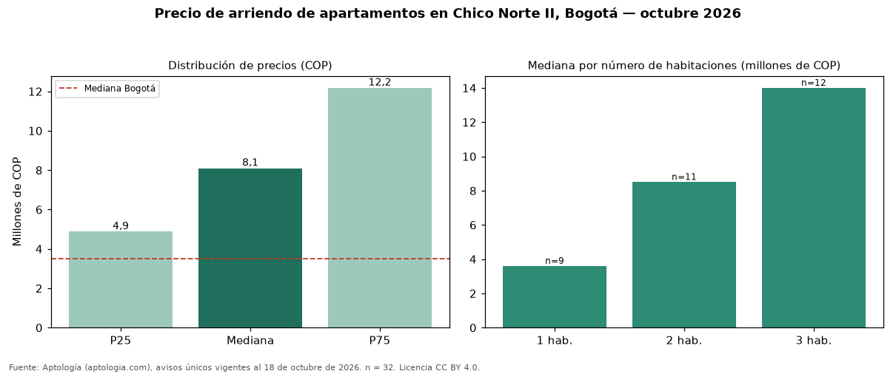

Precio de arriendo de apartamentos en Chico Norte II, Bogotá — octubre 2026
En Chico Norte II, Bogotá, la mediana de canon mensual de apartamentos es COP 8.100.000, según 32 avisos únicos vigentes. Eso la ubica 131 % por encima de la mediana de Bogotá para apartamentos (COP 3.500.000). Por metro cuadrado, la mediana es COP 81.875/m² (+64 % frente a COP 50.000/m² en Bogotá), puesto 1 de 76 barrios con muestra suficiente. El área mediana anunciada es 109 m² (en Bogotá: 70 m²). Cruzando con la oferta de venta del mismo barrio, la rentabilidad bruta implícita es de 10,2 % anual (canon por m² × 12 / precio por m²). La dispersión es alta: el cuartil superior (COP 12.175.000) es 2,5 veces el inferior (COP 4.875.000). El segmento con más oferta es el de 3 habitaciones (12 avisos, mediana COP 14 millones); pasar de 2 habitaciones a 3 habitaciones sube la mediana 65 %. Datos abiertos CC BY 4.0 de Aptología; fuente y búsqueda de inmuebles: https://www.aptologia.com/arriendo/bogota/chico-norte-ii. Archivos: PDF de 2 páginas, CSV con las cifras y gráfica PNG.

| Avisos únicos | 32 |
|---|---|
| Percentil 25 | COP 4.875.000 |
| Mediana | COP 8.100.000 |
| Percentil 75 | COP 12.175.000 |
| Mediana por m² | COP 81.875 |
Fuente: avisos vigentes de portales inmobiliarios recopilados por Aptología, deduplicados (mínimo 30 avisos únicos por celda). Precios pedidos, no cerrados. Fecha: 2026-10-18.